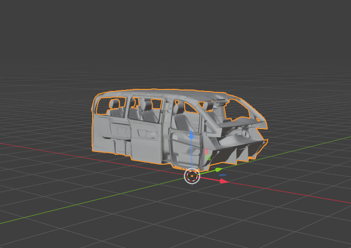
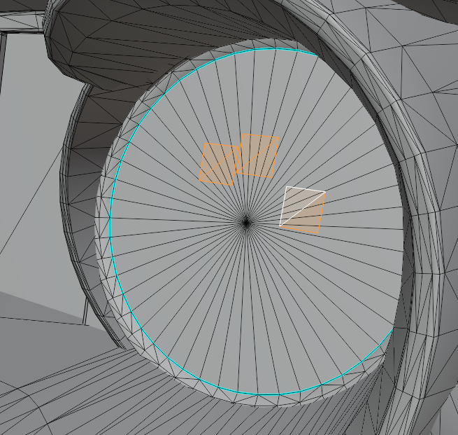
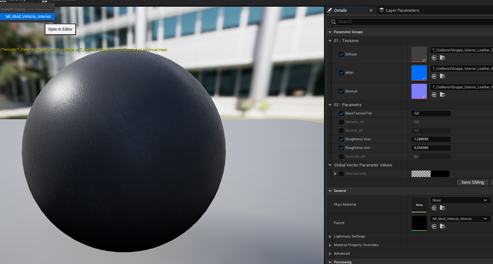
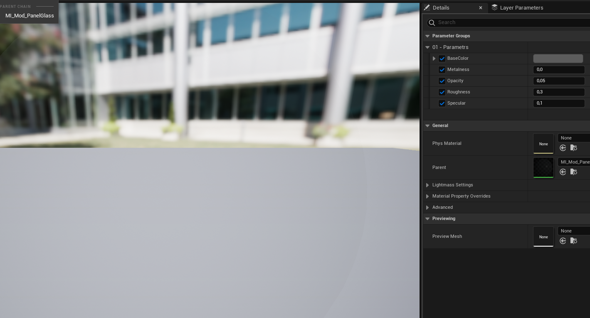
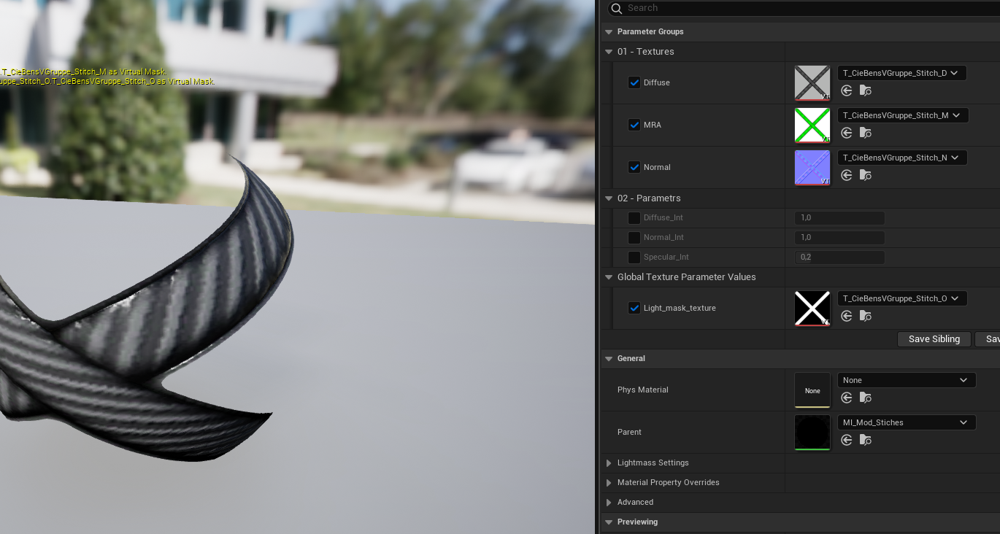
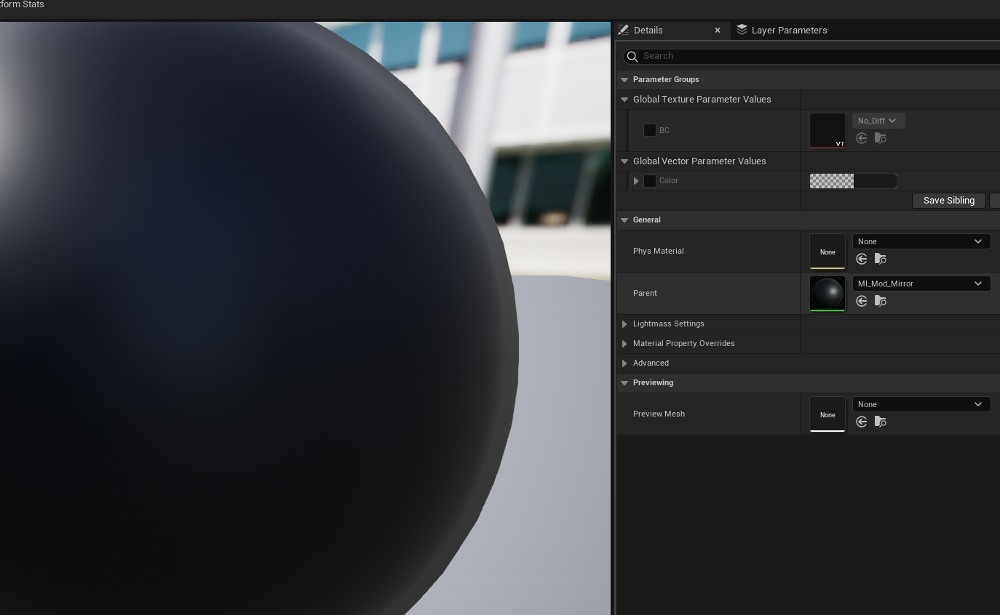
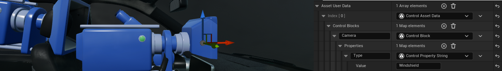
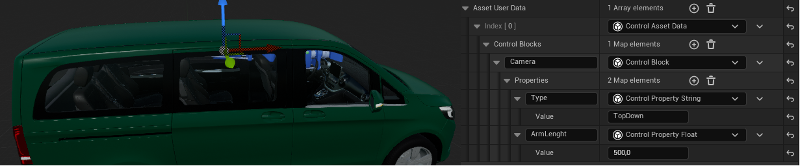
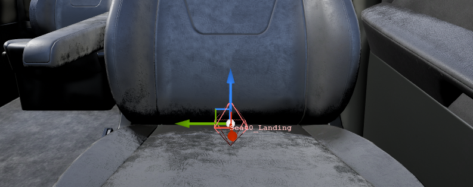
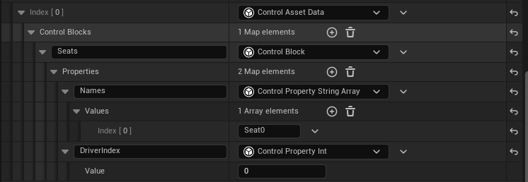

Навигация: README | 01. Минимальный автомобиль | 02. Экстерьер, свет и мир | 03. Салон, приборка и камеры | 04. Зеркала и дворники | 05. Звуки и FMOD | 06. Комплектации, логика и шпаргалка
В этом модуле мы соберём полноценный вид из кабины:
InteriorObjects

+X и находится в тех же мировых координатах, что и кузов (Body), с масштабом 1:1 в сантиметрах..fbx салона в MyFirstCar/Meshes/.Import Materials (снимите галочку) и Build Nanite (False).NoCollision (физическая коллизия нужна только на Body), поэтому Import Collisions и Fallback Collision Type можно выключить (False / None).MI_Mod_*)Все текстуры салона также должны иметь Virtual Texture Streaming = True (и Masks (no sRGB) для MRA-карт). Создавайте Material Instance от следующих родительских материалов из Content/Common/MasterMaterials/VehicleMaterials/ModMaterials/:
| Элемент салона | Родительский материал | Примечание |
|---|---|---|
| Обшивка, торпедо, сиденья, пластик | MI_Mod_Vehicle_Interior |
Основной PBR-материал салона. |
| Защитное стекло приборной панели | MI_Mod_PanelGlass |
Прозрачное стекло над шкалами. |
| Детали с маской прозрачности (оплётка руля, строчка сидений) | MI_Mod_Stiches (обратите внимание: без t) |
Поддерживает маску прозрачности (Opacity). |
| Плафон / корпус центрального зеркала | MI_Mod_Mirror |
Используется для корпуса/плафона салонного зеркала (не для отражающей поверхности!). |
| Иконки-индикаторы на приборной панели | MI_Mod_Emissive_Ikons (через k) |
Рекомендуется использовать готовый атлас T_Dashboard_D / T_Dashboard_E / T_DashboardMask из CieBensVGruppe/Textures/. |
| Светящиеся шкалы и стрелки приборки | MI_Mod_Emissive_Panel |
Для стрелок (SpeedometrArrow, RPMArrow и др.) и шкал (Dashboard). |
| Подсвечиваемые кнопки и переключатели в салоне | MI_Mod_Emissive_Saloon |
Кнопки стеклоподъёмников, климат-контроля и т. п. |




InteriorObjects)V_<ИмяМода>.DefaultSceneRoot → нажмите + Add → Scene и назовите компонент строго InteriorObjects (Location = 0, 0, 0, Rotation = 0, 0, 0).InteriorObjects компонент StaticMeshComponent с вашим мешем салона (Collision Presets = NoCollision, Receives Decals = False). Все остальные элементы интерьера (руль, стрелки и т. д.) также удобно крепить внутрь InteriorObjects.SteeringWheel)0, 0, 0), лицевая часть руля смотрит вдоль оси Z (ось вращения руля — Z). Импортируйте без коллизии и без создания материалов.
InteriorObjects добавьте StaticMeshComponent с мешем руля (NoCollision).Location и Rotation на рулевой колонке салона.ControlBlock с именем SteeringWheel (свойств добавлять не нужно).
Dashboard): стрелки и индикаторы0, 0, 0).+Z, а сама стрелка (её «остриё») указывает вдоль оси +X.StaticMeshComponent для каждой стрелки (внутрь InteriorObjects, NoCollision).Location и Rotation каждой стрелки так, чтобы она указывала ровно на нулевое (минимальное) значение шкалы.ControlBlock для каждой стрелки:| Стрелка | Имя ControlBlock |
Свойства (Properties, тип Control Property Float) |
|---|---|---|
| Спидометр | SpeedArrow |
• MaxAngle — угол поворота (в градусах) от нуля до максимума шкалы• MaxValue — максимальная скорость на шкале (например, 260.0) |
| Тахометр (RPM) | RPMArrow |
• MaxAngle — угол до максимума шкалы (например, 237.0)• MaxValue — максимальные обороты на шкале (например, 6000.0) |
| Уровень топлива | FuelArrow |
• MaxAngle — угол от пустого бака до полного |
| Температура ОЖ | CoolantTemperatureArrow |
• MaxAngle — угол от минимума до максимума шкалы• MinValue — минимальная температура на шкале (например, 50.0)• MaxValue — максимальная температура на шкале (например, 130.0) |
(Наглядный пример заполнения RPMArrow приведён в Модуле 1.)
SalonLights)Для работы контрольных ламп на приборной панели нужно выполнить 2 шага:
Slot Name на меше салона / приборкиДля иконок удобно использовать готовые текстуры T_Dashboard_D (цвет) и T_DashboardMask / T_Dashboard_E из CieBensVGruppe/Textures/ вместе с родительским материалом MI_Mod_Emissive_Ikons.
Откройте Static Mesh салона (и меши стрелок) и в Material Slots пропишите нужные Slot Name из сводной таблицы ниже.

ControlBlock SalonLights (или скопировать DashboardController)Самый быстрый способ для новичков:
Если вам не нужна нестандартная схема индикаторов, откройте эталонный V_CieBensVGruppe, выберите в дереве Components компонент DashboardController, нажмите Ctrl + C, откройте ваш Актор V_<ИмяМода> и нажмите Ctrl + V! Все 23 привязки уже настроены внутри — вам останется только задать соответствующие Slot Name на меше салона.
Если вы настраиваете привязку вручную:
SceneComponent (или выберите меш салона) и добавьте ControlBlock с именем SalonLights.Properties добавляйте пары:
*Intensity).Control Property String Array, внутри Values — один или несколько Slot Name материалов, свечением которых управляет этот параметр.
SalonLights)Обратите внимание на точное написание слота SpeedometrArrow (без буквы e после t) — писать строго так!
Параметр из физики (ключ в SalonLights) |
Рекомендуемый Slot Name материала |
Назначение |
|---|---|---|
LowBeamIconIntensity |
LowBeamIcon |
Индикатор ближнего света фар |
HighBeamIconIntensity |
HighBeamIcon |
Индикатор дальнего света фар |
ParkingLightsIntensity |
ParkingLightsIcon |
Индикатор габаритных огней |
FrontFogLightsIntensity |
FrontFogLightsIcon |
Индикатор передних противотуманных фар |
RearFogLightsIntensity |
RearFogLightsIcon |
Индикатор задних противотуманных фонарей |
LeftTurnLightIconIntensity |
LeftTurnLightIcon (или общий TurnLightIcon) |
Индикатор левого поворотника / аварийки |
RightTurnLightIconIntensity |
RightTurnLightIcon (или общий TurnLightIcon) |
Индикатор правого поворотника / аварийки |
HazardLightIconIntensity |
HazardLightIcon |
Индикатор кнопки аварийной сигнализации |
SafetyBeltIconIntensity |
SafetyBeltIcon |
Индикатор непристёгнутого ремня безопасности |
ParkingBrakeIconIntensity |
ParkingBrakeIcon |
Индикатор стояночного тормоза (ручника) |
BatteryIconIntensity |
BatteryIcon |
Индикатор разряда аккумулятора |
FuelIconIntensity |
FuelIcon |
Индикатор критического (резервного) уровня топлива |
OilIconIntensity |
OilIcon |
Индикатор низкого давления масла ДВС |
OverheatIconIntensity |
OverheatIcon |
Индикатор перегрева охлаждающей жидкости |
EmergencyStopIconIntensity |
EmergencyStopIcon |
Критическая лампа «STOP» (немедленно остановить и заглушить ДВС) |
PowerSteeringIconIntensity |
PowerSteeringIcon |
Индикатор неисправности усилителя руля |
AbsActiveIconIntensity |
AbsIcon |
Индикатор срабатывания / проверки системы ABS |
AbsDisableIconIntensity |
AbsIcon |
Индикатор отключения / неисправности системы ABS |
TcsActiveIconIntensity |
TCSActiveIcon |
Индикатор активного срабатывания системы стабилизации TCS (ESP) |
TcsDisableIconIntensity |
TCSDisableIcon |
Индикатор выключенной системы стабилизации TCS (ESP) |
AirbagIconIntensity |
AirbagIcon |
Индикатор подушки безопасности (самодиагностика при включении зажигания) |
ExhaustSystemIconIntensity |
ExhaustSystemIcon |
Индикатор неисправности выхлопной системы / Check Engine |
CheckIconsIntensity |
CheckIcons |
Вспомогательный канал: загорается только при самодиагностике ламп при включении зажигания (для декоративных иконок без отдельной логики) |
DashboardIntensity |
Dashboard, SpeedometrArrow, RPMArrow, FuelArrow, TemperatureArrow, InteriorButton, MainDisplay, SecondDisplay |
Общая подсветка приборной панели, стрелок, кнопок салона и дисплеев |
Про бортовые мониторы / мультимедиа-экраны:
На текущий момент отдельная инструкция и функционал настройки интерактивных мониторов в модах отсутствуют (можно использовать статическую подсветку через слоты MainDisplay / SecondDisplay).
Все камеры настраиваются одинаково: вы добавляете компонент в Актор V_<ИмяМода>, выставляете его положение/поворот и вешаете ControlBlock с именем Camera.
Тип камеры (Type, String) |
Какой компонент создать | Дополнительные свойства | Как расположить |
|---|---|---|---|
ThirdPersonBack |
SceneComponent |
Опц. ArmLength (Float, напр. 600.0) |
Позиция задаёт центр вращения камеры (обычно центр автомобиля). Камера смотрит сзади. |
ThirdPersonFront |
SceneComponent |
Опц. ArmLength (Float) |
Позиция задаёт центр вращения камеры. Камера смотрит спереди. |
FirstPerson |
CameraComponent или SceneComponent |
Нет | Позиция и поворот глаз водителя в салоне (удобно использовать CameraComponent, чтобы сразу видеть превью кадра в редакторе!). |
Windshield |
CameraComponent или SceneComponent |
Нет | Вид от лобового стекла / капота (выставьте позицию и поворот). |
TopDown |
SceneComponent |
Опц. ArmLength (Float) |
Позиция — строго в центре автомобиля (камера вида сверху). |




Seats)На текущий момент в пользовательских автомобилях можно посадить только водителя. Для этого используется сокет на Static Mesh сиденья/салона и ControlBlock Seats.
_Landing в Static Mesh+ (Create Socket) и назовите сокет по правилу <ИмяНабора>_Landing, например Seat0_Landing.
<ИмяНабора> — любое удобное имя на латинице (в примере Seat0)._Landing — обязательный программный суффикс (на текущий момент требуется только _Landing).+X смотрела вперёд параллельно подушке сиденья (в сторону руля), а синяя ось +Z — вверх.

ControlBlock Seats в АктореV_<ИмяМода> и выделите тот StaticMeshComponent, в меше которого вы только что создали сокет Seat0_Landing.Asset User Data → Control Asset Data → ControlBlock с именем Seats:
Names, тип Control Property String Array → добавьте элемент Seat0 (только префикс, без _Landing!).DriverIndex, тип Control Property Int → укажите индекс водительского места из массива Names (для Index [0] это 0).
CarToy)Чтобы игроки могли ставить на торпедо пользовательские игрушки из мастерской, нужно указать точку крепления:
V_<ИмяМода> добавьте любой компонент, унаследованный от SceneComponent (удобнее всего использовать SkeletalMeshComponent или StaticMeshComponent с приложенной к шаблону моделью космонавта SM_Cosmonaft_Anim из Content/Common/Enviroment/Cosmonaft/ — она поможет точно прикинуть размер и поворот на торпедо, а в самой игре эта тестовая модель автоматически скроется!).NoCollision, расположите компонент на торпедо и добавьте ControlBlock с именем CarToy (без свойств).
Следующий шаг: переходите к Модулю 4. Зеркала заднего вида и дворники, чтобы настроить обзорность и работу стеклоочистителей.